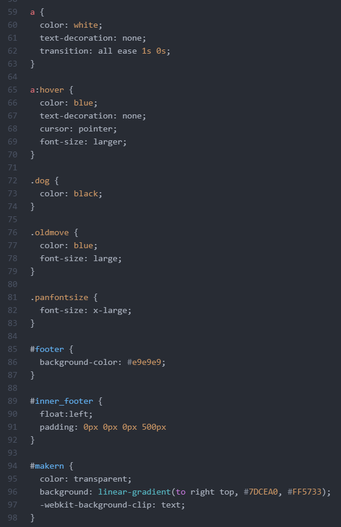

패치노트
전체(백그라운드)
CSS 문법 추가로 디자인을 업그레이드함
다양한 id 및 class 선택자를 추가하여 더욱 간결하고 효율성 높은 체계를 구축함

Noto Sans Kr 글꼴을 사용하여 가독성을 높임
상단
라이트 모드 / 다크 모드 버튼이 사라지고 상단 바로 대체됨
본문 - 글 중앙 정렬로 가독성을 높임

편암함, 투명함, 안정성 부분을 진하게 표시함
제작 과정(기계의 원리) 아래의 사진의 넓이를 10% 확대함
판매처를 더 보강함
버튼의 크기를 확대함
하단
패치노트 추가
구버전 사이트 이동 추가
제작자 표기(그라데이션으로 표기함.)
출처 표기
운영
제작자 - 10815 > 20215 배현석
Released - 2021년 4월 8일 - 수업 중 ~ 쉬는 시간
2nd Patch - 2021년 4월 10일 - 19시 ~ 19시 40분
1차 3rd Patch - 2022년 3월 20일 - 18시 ~ 21일 4시 00분
2차 3rd Patch - 2022년 3월 21일 - 12시 ~ 22일 2시 00분